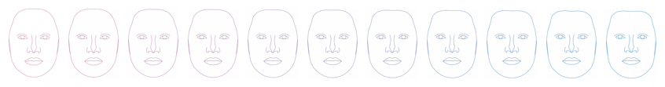

20 New Tool
I’m going to cheat a little here and use a tool that is probably new to you, but not to me: webmorphR. This is the R companion to webmorph.org, a website I developed to morph and transform faces. It uses the open-source Java libraries from psychomorph, but with an enhanced interface for delineating faces and batch-processing. The R package adds reproducible scripting. There are several vignettes describing the package.
Some doofus on Twitter was arguing that they know who is “really” male and female from “bone structure” 100% of the time within milliseconds, and misinterpreted colleagues’ research (and even some of my own) in support of this nonsense. So I’m going to make a quick test to see if you can guess the gender of 15 random faces (we don’t know the cis/trans status of the face models, who I assume have the same probability of being cis or trans as your average Londoner) if you only have info from face shape and internal features (except eyebrows).
20.1 London Faces
There are 102 images in the CC-BY licensed Face Research Lab London Set. You’ll have to install the stimsets package from github first. Load them and resize so they’ll be faster to process for this demo.
20.2 Add info
The stimsets package also has a table of info about the images.
| face_id | face_age | face_gender | face_eth |
|---|---|---|---|
| 001 | 24 | female | white |
| 002 | 24 | female | white |
| 003 | 38 | female | white |
| 004 | 30 | male | white |
| 005 | 28 | male | east_asian |
| 006 | 31 | female | west_asian |
Add this to the stimuli. You can use it to subset the images using the subset() function.
20.2.1 Reduce Templates
The faces come already delineated (you can add delineations to your own images at webmorph.org, by using the auto_delin() function, or with the yet-to-be-documented quick_delin() function). You can use the delineations to morph and transform the faces, but here we’re going to visualise face shape.
This is the full delineation.
And this is a reduced delineation with just the face shape and main features. The crop_tem() function crops the image to just outside the template limits.
Code
Sample 15 random images, reduce the templates, procrustes align them so they’re all the same approximate size, and crop them.
20.2.2 Draw Templates
I’ll first draw on the template with a neutral purple colour and label them all with numbers. Before you scroll on, can you guess which are male and which are female?
Code
What percent did you get right?
20.3 Save images
20.4 Gender differences
So what is the difference between the average male and female face shape? The demo_stim() function gives you female and male composite (average) faces from the London set.
It’s a little more complicated that I expected to superimpose the templates, but I got there in the end (and this will probably prompt some new functions.)
Code
The continuum() function is like seq() for faces. It uses webmorph.org transforming to make a continuum from one face to another.
Code
